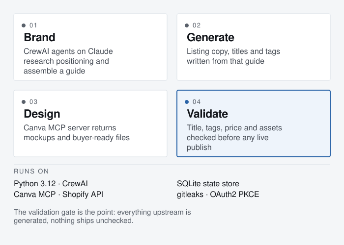
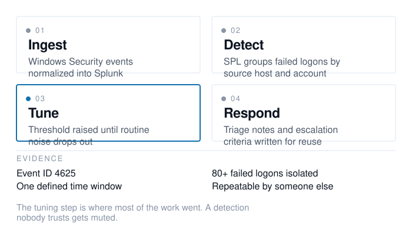

Khaneil Campbell
AI Cybersecurity Technology
Engineering intelligent solutions for a connected world.
Exploring the intersection of artificial intelligence, cybersecurity and enterprise technology to build smarter, more secure digital experiences, grounded in five years of enterprise IT, four of them at Columbia University.
Two builds, documented end to end.
One AI system and one security lab. Each is recorded so that the reasoning, not only the result, can be examined.

AI product pipeline
A multi-agent pipeline in which CrewAI agents on Claude research, write, design through Canva's MCP server and publish to Shopify. The engineering of interest is the constraint layer: credential isolation, validation gates and state that can be reconstructed after a failure.
Python · CrewAI · Anthropic API · Canva MCP · Shopify Admin API
Authentication log analysis
Windows authentication events ingested into Splunk and queried until a credential attack separated cleanly from ordinary failed logons. Eighty-plus attempts isolated in a single window.
Splunk · SPL · Windows Security logs · Event ID 4625Phishing response walkthrough
A phishing intrusion reconstructed from the user report through to containment, with the timeline written for readers who were not present.
Access control workflows
Access, recovery and MFA requests resolved against a fixed standard, so that approval does not depend on who is asking or how urgently.
Four areas of practice.
AI workflows and automation
Practical AI work with Claude, Claude Code, MCP connectors and Columbia CHAT, plus Python automation, built behind credential isolation, validation gates and human review.
Systems and end-user support
Frontline and escalated support across Windows endpoints, peripherals and access faults, including the long-tail incidents that no script anticipates.
Microsoft 365 and identity
Account lifecycle, group membership, licensing, mailbox and Teams administration, MFA enforcement, and least-privilege access reviews in Active Directory.
Service management
ITIL 4 practice applied to routine volume: incident and request handling, queue discipline, knowledge articles that are actually reused, and handovers that survive a shift change.
Five years where downtime has a cost.
I have spent more than five years in enterprise IT at Columbia University and NYC Health + Hospitals, where downtime is not an inconvenience.
My work sits where support, administration and process meet: keeping endpoints and accounts healthy in Microsoft 365 and Active Directory, running requests through ITIL 4 practices, and building AI workflows with Claude and MCP that I can audit. More about how I work.

- Based
- New York, NY
- Experience
- 5+ years enterprise IT
- Certified
- CompTIA Security+
Open to new work.
If the work above is the kind of thing your team needs, the fastest route is email. I read everything that arrives.